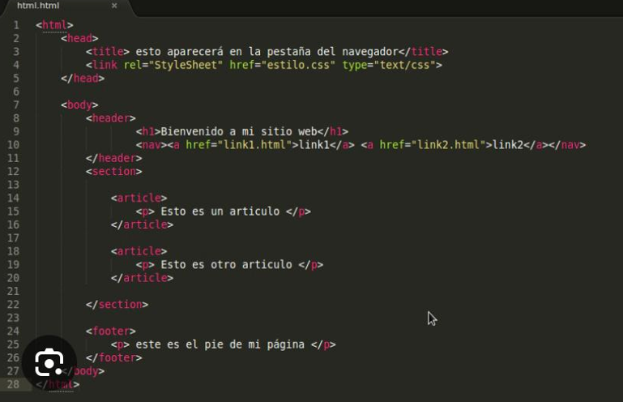
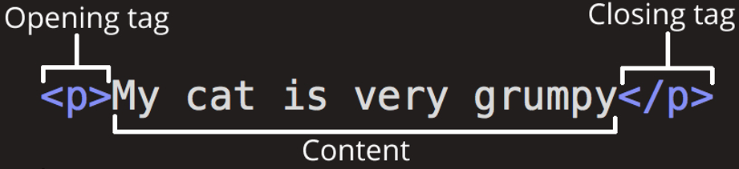
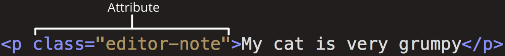

¿QUE ES HTML?
El HTML (Hyper Text Markup Language), es el lenguaje con el que se escriben las páginas web. Es
un lenguaje de hipertexto, es decir, un lenguaje que permite escribir textos de forma estructura, y
que está compuesto por etiquetas, que marcan el inicio y el fin de cada elemento del documento.
Un documento hipertexto no solo se compone de texto, puede contener imágenes, sonidos,
videos, etc, Por lo qué el resultado puede considerarse como un documento multimedia.
Los documentos HTML deben tener la extensión HTML o HTM, para que pueda ser visualizados en
los navegadores (programas que permiten visualizar las páginas web).
>
Los navegadores se encargan de interpretar el código HTML de los documentos, y de mostrar a los
usuarios las páginas web resultantes del código interpretado.

Etiquetas HTML
con estos códigos para dar instrucciones al navegador web sobre cómo mostrar el texto. Estas
etiquetas de marcado son las propias etiquetas HTML.
Cuando escribes código en HTML, estás escribiendo etiquetas HTML. Todas las etiquetas HTML
están hechas con un número de partes específicas, incluyendo:
- El carácter “menor que” <
- Una palabra o carácter que determina qué etiqueta se está escribiendo
- Cualquier número de atributos HTML que se quiera usar, escritos de la forma nombre =”valor”
- El carácter “mayor que” >
¿Cuales son las etiquetas de HTML basicas?
Hay una serie de etiquetas que son las más usadas para crear cualquier documento HTML, a
continuación las explicamos:
- < html >: El elemento raíz
- < head > para información sobre el documento
- < title >: El título de la página
- < body > para el contenido
- < div > división dentro del contenido
- < a > para enlaces
- < strong > para poner el texto en negrita
- < br > para saltos de línea
- < H1 >…< H6 > para títulos dentro del contenido
- < img > para añadir imágenes al documento
- < ol > para listas ordenadas, < ul > para listas desordenadas, < li > para elementos dentro de la lista
- < p > para parágrafos
- < span > para estilos de una parte del texto

Conceptos basicos de HTML
El Lenguaje de Marcado de Hipertexto (HTML) es el código que se utiliza para estructurar y
desplegar una página web y sus contenidos. Por ejemplo, sus contenidos podrían ser párrafos, una
lista con viñetas, o imágenes y tablas de datos. Como lo sugiere el título, este artículo te dará una
comprensión básica de HTML y cúal es su función.
Entonces, ¿Qué es HTML en realidad?
HTML no es un lenguaje de programación; es un lenguaje de marcado que define la estructura de
tu contenido. HTML consiste en una serie de elementos que usarás para encerrar diferentes partes
del contenido para que se vean o comporten de una determinada manera. Las etiquetas de
encierre pueden hacer de una palabra o una imagen un hipervínculo a otro sitio, se pueden
cambiar palabras a cursiva, agrandar o achicar la letra, etc. Por ejemplo, toma la siguiente línea de
contenido:
HTML
Copy to Clipboard
Mi gato es muy gruñon
Si quieres especificar que se trata de un párrafo, podrías encerrar el texto con la etiqueta de párrafo
(< p >):
HTML
Copy to Clipboard
< p >Mi gato es muy gruñon< /p >
Anatomía de un elemento HTML
Explora este párrafo en mayor profundidad.

Las partes principales del elemento son:
- La etiqueta de apertura: consiste en el nombre del elemento (en este caso, p),
encerrado por paréntesis angulares (< >) de apertura y cierre. Establece dónde comienza o
empieza a tener efecto el elemento —en este caso, dónde es el comienzo del párrafo—.
- La etiqueta de cierre: es igual que la etiqueta de apertura, excepto que incluye una
barra de cierre (/) antes del nombre de la etiqueta. Establece dónde termina el elemento —en este
caso dónde termina el párrafo—.
- El contenido: este es el contenido del elemento, que en este caso es sólo texto.
- El elemento: la etiqueta de apertura, más la etiqueta de cierre, más el contenido
equivale al elemento.
Los elementos pueden también tener atributos, que se ven así:

Los atributos contienen información adicional acerca del elemento, la cual no quieres que aparezca
en el contenido real del elemento. Aquí class es el nombre del atributo y editor-note el valor del
atributo. En este caso, el atributo class permite darle al elemento un nombre identificativo, que se
puede utilizar luego para apuntarle al elemento información de estilo y demás cosas.
Un atributo debe tener siempre:
- Un espacio entre este y el nombre del elemento (o del atributo previo, si el elemento ya posee uno o más atributos).
- El nombre del atributo, seguido por un signo de igual (=).
- Comillas de apertura y de cierre, encerrando el valor del atributo.
Los atributos siempre se incluyen en la etiqueta de apertura de un elemento, nunca en la de cierre.
Nota: el atributo con valores simples que no contengan espacios en blanco ASCII (o cualesquiera
de los caracteres " ' ` = < >) pueden permanecer sin entrecomillar, pero se recomienda
entrecomillar todos los valores de atributo, ya que esto hace que el código sea más consistente y
comprensible.
>
Estructura de una página web
código
< html >
< head >
< title >Primera pagina de Pepe< /title >
< /head >
< body >
Ésta es la primera página de Pepe
< /body >
< /html >
título
Primera pagina de Pepe
visualización Ésta es la primera página de Pep